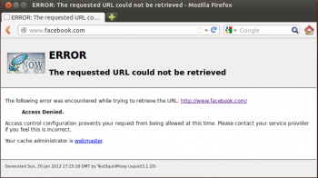
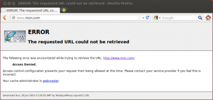
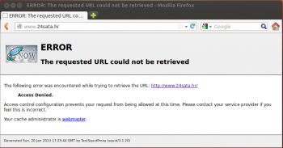

Filtiriranje sadržaja u tvrtkama: (primjena squid-a i ostalih proxya)
Danijela Lončarić (40557/11-R), Mateja Mihalić (41725/12-R), Marina Sklepić (41726/12-R)
Uvod
Internet je duboko integriran u naš svakodnevni život. Njegov utjecaj moguće je prepoznati u različitim poljima, a najviše u poduzećima i njihovim uredima gdje predstavlja važan izvor informacija te je postao snažan alat koji omogućava izvođenje različitih zadataka na prikladan i jednostavan način. Osigurava stvaranje, upravljanje, ažuriranje i dijeljenje informacija u tvrtkama. Kako bi se osigurala komunikacija unutar tvrtke, zaposlenicima se osigurava pristup Internetu kako bi međusobno komunicirali i dijelili informacije. Osim ovoga, Internet je također važan izvor informacija, ali pretjerana upotreba Interneta inicira određena sigurnosna pitanja i probleme poslovnih sustava. Internet pruža veliku količinu sadržaja koji nije povezan s poslovanjem zbog čega je filtriranje sadržaja u tvrtkama postalo vrlo važno.{kind=link}
Imperativ današnjeg poslovanja predstavljaju rješenja koja štite poslovanje od različitih štetnih sadržaja na mreži. Središnja tema našeg projektnog zadatka jest prikazati jedan od načina filtriranja sadržaja u tvrtkama, a to je primjena squid-a i drugih proxy servera čija je korisnost na ovom području dokazana. Primjena različitih proxy servera osigurava da se kontroliraju aktivnosti zaposlenika i da se tvrtka zaštiti od nepotrebnog ili opasnog sadržaja koji kruži mrežom. Ovo predstavlja poseban izazov za velika poduzeća koja zapošljavaju više od 1000 zaposlenika i teško mogu kontrolirati svakog pojedinačno. Poznato je kako je mreža glavni izvor zloćudnog koda i upravo na ovaj način tvrtke štite svoje poslovanje, zaposlenike i bazu podataka koja nikako ne smije biti kompromitirana. Ovakvi troškovi za tvrtke su puno veći nego li troškovi implementacije nekog od rješenja za filtriranje sadržaja. Nakon teoretskog prikaza pojma filtriranja sadržaja i vrsta proxy servera, slijedi praktični dio u kojem će se prikazati instalacija i podešavanje konfiguracije Squid, SquidGuard, Polipo i SafeSquid servera za potrebe filtriranja sadržaja.
Pojam filtriranja sadržaja
Filtriranje sadržaja jest mehanizam koji organizacijama omogućava nadzor nad aktivnostima svih zaposlenih koji imaju pristup Internetu. Sustavi koji podržavaju filtriranje sadržaja filtriraju različite sadržaje i materijale na Internetu prema kriterijima koje definira menadžment organizacije ili pak ih ograničavaju kako se ne bi nekontrolirano slali van tvrtke. Filtriranje sadržaja predstavlja ključan dio sigurnosti na Internetu, a prema Artmanu (2012) filtriranje sadržaja može biti ostvareno primjenom određenih servera ili softverskih paketa koji se jednostavno instaliraju na postojeći sustav. Budući da je u posljednje vrijeme jako istaknuta potreba filtriranja sadržaja u tvrtkama, javila se potreba za definiranje odgovarajuće politike filtriranja sadržaja od strane administratora mreže koji osigurava pristup mreži.
Filtriranje sadržaja moguće je jednostavno definirati kao postupak u kojem se legitimiranim podacima dopušta prolaz u mrežu ili sustav, a nepoželjnim podacima se onemogućava. Pullicino (2011) u svojem članku tvrdi kako je na samom početku pojave filtriranja sadržaja, jedino bilo potrebno postaviti firewall kako bi se onemogućio dotok nepoželjnog sadržaja, međutim ovakva metoda nije se pokazala učinkovitom jer ne pruža dublju analizu paketa i samo filtrira pristup Internetu na temelju domene. Današnje učinkovito filtriranje sadržaja ide dublje u analizu sadržaja nego li je to slučaj kod firewalla. Filtriranje sadržaja je važno iz više razloga, a najvažniji razlog je sigurnost sustava. Među problema koje filtriranje sadržaja rješava su:{kind=link}
- sigurnost – razvojem novih Web tehnologija povećava se kompleksnost u filtriranju sadržaja te povećava mogućnosti zlonamjernih napada od strane hackera ili autora različitih malicioznih kodova koji su postali izrazito uspješni u kompromitiranju sigurnosti i poslovanja mnogih tvrtki;
- legalni problemi – sklonost neprimjerenim sadržajima što rezultira financijskom, legalnom i tehničkom štetom;
- produktivnost – pad produktivnost zaposlenika zloupotrebom Inerneta.
Među ostalim problemima ističu se: pretjerana upotreba mrežnih resursa, povećanje sigurnosnih te legalnih rizika, itd. Neke od prijetnji koje dovode do prethodna tri problema su: Phishing (glavni cilj je prikupljanje i zloupotreba različitih tipova podataka kao što su lozinke, brojevi kreditnih kartica, itd.),Spyware (različiti alati koji nastoje prate aktivnosti korisnika), virusi i ostali tipovi malwera, SPAM i SPIM (nepoželjne poruke koje korisnici dobivaju putem e-maila - SPAM ili IM poruka - SPIM), napadi na IT infrastrukturu i curenje poslovnih informacija.
Filtriranje sadržaja često se odnosi na stranice koje, prema stajalištu tvrtke, organizacije ili pojedinca koji provodi filtriranje: uključuju ilegalne sadržaje;promiču, omogućuju ili sadrže rasprave o: napadima na računalne sustave, neovlaštenoj distribuciji vlasničkih programskih paketa (eng. software piracy), kriminalnim vještinama ili drugim potencijalno ilegalnim radnjama; uključuju seksualno eksplicitne sadržaje kao što su pornografski i erotski sadržaji te neerotske rasprave o seksualnim temama; promiču, omogućuju ili sadrže rasprave o životnim stilovima koje se mogu smatrati nemoralnima kao što su promiskuitet, sve seksualne orijentacije osim heteroseksualne, seksualna aktivnost izvan braka te drugi alternativni životni stilovi; uključuju sadržaje vezane uz nasilje; promiču, omogućuju ili sadrže rasprave o predrasudama i o govoru mržnje; promiču, omogućuju ili sadrže rasprave o: kockanju, zloupotrebi droge i alkohola te ostalim aktivnostima koje se smatraju porocima; vrlo vjerojatno ne uključuju sadržaje vezane uz školovanje pojedinog učenika, poslovne zadatke određenog zaposlenika ili druge zadatke kojima je računalo, na kojemu se filtriranje provodi, namijenjeno; u suprotnosti su s interesima tvrtke, organizacije ili pojedinca koji provodi filtriranje kao što su radničko udruživanje ili kritike određene tvrtke ili industrije; promiču ili sadrže rasprave o politici, religiji ili drugim neželjenim temama; uključuju mogućnosti socijalnog umrežavanja (eng. social networking) putem kojih bi djeca mogla biti izložena napasnicima.
Strategije filtriranja sadržaja u tvrtkama
Sve ovo, uz odgovarajuću strategiju filtriranja sadržaja kombiniranu učinkovitim alatom za nadzor sadržaja na Internetu je moguće riješiti i osigurati zaštitu sigurnosti i zakonskih načela te povećati produktivnost na radnom mjestu. Tvrtke danas nastoje integrirati različita sigurnosna rješenja sa dijelovima IT infrastrukture među kojima se nalaze i Proxy serveri o kojima će biti rečeno više u daljnjem radu. Trenutno su definirane četiri moguće alternative za filtriranje i pristup nepoželjnog sadržaja na Internetu:
- politika poduzeća – poduzeća kroz svoju politiku nastoje upozoriti i ograničiti zaposlenicima pristup određenim stranicama, međutim taj problem je teško kontrolirati kod većih poduzeća,
- nadzor – svodi se na pokušaje kontrole zaposlenika glede njihovog pristupanja a ostvaruje se posebnim odjelom koji analizira pristup Internetu,
- filtriranje sadržaja primjenom proxy servera – postoje mrežne komponente zvane proxy serveri (hardver ili softver) koji određenim računalima ograničavaju pristup organizacijskoj mreži s određenih IP adresa, ali ovo rješenje je jako teško održavati, jer se IP adrese svakodnevno mijenjaju i
- inteligentno filtriranje sadržaja – ova alternativa uključuje ograničavanje pristupa organizacijama određenom sadržaju kako bi se zaposlenicima onemogućio pristup tim sadržajima.
Prednosti i nedostaci filtriranja sadržaja u tvrtkama
Sama primjena filtriranja sadržaja u tvrtkama za sobom nosi određene prednosti i nedostatke. Među prednostima filtriranja sadržaja ističe se sljedeće:
- povećanje produktivnosti – ukoliko se 40% aktivnosti zaposlenika troši na poslove koji nemaju veze sa poslom, tvrtke mogu izgubiti mnogo sati vrijednih resursa što dodatno može povećati troškove provođenja poslovanja,
- smanjenje preopterećenosti mreže – ukoliko korisnici kontinuirano koriste Internet za skidanje slika, filmskih klipova ili glazbe, to će dodatno usporiti mrežne performanse što može rezultirati dodatnim nepotrebnim troškovima,
- pojava potrebe za zakonskom osnovicom – neke industrije su regulirane snažnim zakonskim okvirima što rezultira potrebom za čuvanje korisničkih i ostalih poslovnih informacija,
- smanjenje kriminalnih aktivnosti – postoje mnogobrojni slučajevi u kojima su ljudi koristili organizacijske resurse za kršenje zakona čime organizacija na ovakav način usmjerava zaposlenike i njihove akcije te njihovo ponašanje,
- zaštita od gubitka podataka – organizacije su dužne zaštititi vitalne informacije kao što su podaci o korisnicima i ostali potrebni podaci,
- ograničenje neprimjerenih upotreba – kada osoblje zna da je nadzirano, rijetko koristi mrežu za aktivnosti koje nisu povezane sa zadacima,
- zaštita reputacije – ograničavanje pojedincima da šalju skandalozne mailove može zaštititi organizacijski brand i reputacija i
- zaštita od maltretiranja, prijevara i nezakonitih aktivnosti.
Kao i kod većine sustava, osim prednosti postoje i neki nedostaci. Ovdje se spominju sljedeći nedostaci:
- „Big Brother“ – filtriranje sadržaja na neki način predstavlja nadzor nad zaposlenicima od strane menadžmenta tvrtki što može označavati i nepovjerenje s njihove strane,
- postoji mogućnost da se filtriraju pogrešni mailovi ili sadržaj što pošiljatelj može uočiti tek nakon određenog vremena,
- može biti ograničavajuće – ukoliko je neki sadržaj blokiran ili filtriran kroz čitav period to može rezultirati frustracijom,
- može se smatrati nametljivim za privatnost – tako dugo dok je neki sadržaj označen kao privatan, razumno je da neki obavljaju privatne aktivnosti,
- izgradnja sustava filtriranje nije uvijek u skladu sa zakonom.
Moderni trendovi filtriranja podataka u tvrtkama
Za informacijsku sigurnost filtriranje sadržaja je vrlo važno te osigurava utvrđivanje potencijalnih prijetnji i loših stvari i njihovo pravilno procesiranje. Ott (2011) ističe kako prilikom se razvoja sustava za filtriranje sadržaja nastoji osigurati IDS (Intrusion Detection) – detekcija napada, detekcija malicioznog koda i drugih negativnih akcija.Do sada je razvijeno nekoliko trendova filtriranja sadržaja za osiguranje informacijske sigurnosti, a prilikom razvoja težilo se implementaciji različitih funkcija tih rješenja za filtriranje sadržaja. U pravilu su developeri nastojali kreirati rješenja koja, osim filtriranja sadržaja također rade kao antivirusi, firewalli i sustavi za prevencije. S jedne strane ovo je reduciralo troškove tvrtki, međutim neki od tih rješenja su imale ograničene funkcionalnosti. Moderne trendove u filtriranju sadržaja čine:
- filtriranje Web-prometa - prijelaz razvoja rješenja za Web filtriranje od upotrebe predefiniranih URL-ova prema kategorizaciji Web stranica na temelju njihovog sadržaja, ovo je karakteristično za mnoge portale koji sadrže informacije iz različitih kategorija prilagođene korisnicima;
- Web filtriranje u svijetu Web 2.0. - pojava Web 2.1. tehnologija uzrokovala je pojavu velikog broja problema za filtriranje sadržaja, u većini slučajeva kod prijenosa podataka razdvojenog od dizajna stranice, postoji mogućnost prenošenja i zabranjenih informacija;
- integracija s eksternim sustavima - postoji potreba za integracijom filtriranja podataka s ostalim sustavima kao što su proxy serveri, antivirusni alati (sustavi za filtriranje podataka se mogu ponašati kao klijenti ili serveri zbog čega su razvijeni različiti protokoli među kojima se ističu ICAP (Internet Content Adaptation Protocol) i OPES (Open Pluggable Edge Services);
- HTTP i ostali oblici enkripcije prometa - u svojem članku Viklund(2011) tvrdi kako se do 50% Internet prometa prenosi u enkriptiranom obliku, ontrola ovakvog prometa karakteristična je za mnoge tvrtke jer mnogi korisnici upotrebljavaju enkripciju za stvaranje kanala iz kojih cure informacije i koji se mogu koristiti za prenošenje malicioznog koda;
- filtriranje e-mailova - ukoliko organizacije upotrebljavaju e-mailove, što je slučaj kod svih tvrtki, nužno je da implementiraju odgovarajuću zaštitu za primljene i poslane poruke, većina postojećih rješenja osigurava kontrolu za dolazeći sadržaj i to najčešće kroz integraciju s antivirusnim programima, a neka od rješenja su integrirana i u e-mail klijente;
- filtriranje IM poruka (Filtering of instant messaging) - rješenja za razmjenu IM poruka su postala veoma popularan alat u mnogim tvrtkama;
- VoIP filtriranje (VoIP filtering) - osnovna karakteristika VoIP-a jest slanje glasovnih poruka između računala i njegova pojava je zahtijevala razvoj sustava za njegovu kontrolu;
- Peer-to-Peer flitriranje (Peer-to-peer filtering)- upotreba peer-to-peer mreža može biti opasna za tvrtke zbog sljedećih prijetnji: širenje malicioznog koda, curenje informacija, distribucija copyright podataka koja rezultira legalnom zloupotrebom tvrtke, danas postoji velik broj mreža koje karakterizira peer-to-peer razmjena podataka (neke od njih koriste sheme s centralnim serverom koji koordiniraju korisnike, a neke su potpuno distribuirane bez koordinatora pri čemu je druga shema je najteža za filtriranje sadržaja).
Sherman (s.a) tvrdi kako prema podacima koje je objavio PC World, 41% svih malih tvrtki koristi filtriranje sadržaja, a pronalazak najboljeg rješenja predstavlja izazov. Neka od mogućih rješenja ili strategija moguće je ostvariti primjenom routera, odgovarajućeg softvera i dodatnog hardvera. Jedna od strategija koja uključuje postavljanje routera za potrebe filtriranja sadržaja predstavlja jednostavno rješenje i moguće ga je izvesti bez IT osoblja. Neke od standardnih opcija uključuju liste za blokiranje i dozvole pristupa. Druga strategija se ostvaruje primjenom odgovarajućeg softvera. Svodi se na instalaciju softvera kako bi se osigurala kontrola sadržaja kojima zaposlenici mogu pristupiti. Posljednja strategija svodi se na primjenu dodatnog hardvera. Neki proizvođači umjesto routera pružaju dodatan hardver koji omogućava filtriranje sadržaja. Taj hardver uključuje firewall ili pak proxy servere o kojima će više biti rečeno u narednim poglavljima.
Proxy poslužitelji
Proxy poslužitelj je jedno računalo koje se može programirati tako da radi više različitih poslova i predstavlja posredničko računalo između klijenta i poslužitelja. Klijent se povezuje na proxy poslužitelj kada traži određenu uslugu od drugog poslužitelja. Unutar proxy poslužitelja obrađuje se klijentski zahtjev koji se nakon obrade prosljeđuje do željenog poslužitelja u izvornom ili izmijenjenom obliku ili se odbacuje ukoliko nije zadovoljio neki od zadanih uvjeta postavljenih na proxy poslužitelju. Na Slici 3. vidimo proxy poslužitelj prikazan crvenim računalom, a nalazi se između druga dva računala koja predstavljaju klijenta i poslužitelja. [CERT, 2007b]
{kind=link}
Prema Sviličiću i Krašu (2005), proxy poslužitelj pruža posrednu uslugu na način da specijalizirana aplikacija ili serverski program primi zahtjev za određenom uslugom (npr. web pretraživanje) od strane korisnika. Nakon toga taj isti zahtjev prosljeđuje aktualnim servisima smještenim u vanjskoj mreži. Tako se postiže situacija u kojoj na strani odredišnog servera izgleda kao da su svi upiti postavljeni od strane proxy servera, a identitet unutrašnjih korisnika se sakrije. Princip rada proxy poslužitelja prikazan je na Slici 4.
{kind=link}
Proxy poslužitelji koriste su u razne svrhe, a neke od njih su sljedeće:
- Anonimnost krajnjih korisnika
- Ubrzanje pristupa resursima upotrebom metode privremene pohrane (eng. caching)
- Zabrana pristupa određenim web stranicama
- Zabrana pristupa web stranica s određenim ključnim riječima
- Zabrana određenih protokola
- Zabrana pristupa određenim priključcima (eng. ports)
- Zabrana pristupa određenih korisnika proxy poslužitelju
- Pretraživanje sadržaja koji se prenosi
- Uklanjanje dijelova web stranice poput reklama
Ubrzanje mrežnog prometa upotrebom caching-a i filtriranje zahtjeva najčešće su upotrebe proxy poslužitelja. Caching predstavlja postupak kojim se najčešće pristupan sadržaj sprema u memoriju proxy poslužitelja. Dakle, ako jedan od korisnika zatraži nekakvu stranicu, proxy će kopirati sadržaj u svoj cache. Na taj način se ne mora ponovo spajati na Internet i dohvaćati s udaljenog poslužitelja svaki put kada sljedeći zahtjev za tu istu stranicu stigne do proxy-a. Ovakvog oblika bili su i prvi proxy poslužitelji, a koristili su se u velikim tvrtkama kako bi se smanjili troškovi Internet prometa. Pomoću njih su se mogle dopustiti ili zabraniti određene web stranice te nadgledati cjelokupni promet zaposlenika iste tvrtke. [CERT, 2007b]
Izuzevši već spomenuto sakrivanje identiteta računala unutrašnje mreže, prednosti korištenja proxy poslužitelja su još i [Sviličić, B., Kraš, A. (2005)]:
- Pohrana upita: Spremanje (eng. cashing) čestih upita na proxyu, odnosno lokalno pohranjivanje kopija podataka, a ako je broj ponovljenih upita velik, cashiranjem se znatno povećavaju performanse sustava.
- Inteligentno pročišćavanje sadržaja: Proxy poslužitelj omogućuje inteligentno pročišćavanje sadržaja podataka (eng. content scaning) s ciljem detektiranja i uklanjanja potencijalno zlonamjernog programskog koda (npr. računalnih virusa).
- Kontrola pristupa na nivou korisnika: Budući da je proxy poslužitelj aktivno uključen u konekciju, moguće je vršiti kontrolu pristupa na nivou korisnika te poduzeti određenu akciju ovisno o radnjama samog korisnika, međutim ovo je mnogo teže postići korištenjem paketnog filtera.
Isto tako, Sviličić i Kraš (2005) u svom članku o zaštiti privatnosti računalnog sustava navode i nedostatke korištenja proxy poslužitelja:
- Dostupan je samo za određene usluge: Proxy programski paketi su široko dostupni za starije i jednostavnije usluge (npr. web, email), dok je provjerene programske pakete za novije i manje rasprostranjene servise teško nabaviti.
- Proxy poslužitelj za svaki pojedini protokol: Moguća je situacija u kojoj je potrebno postaviti različite proxy poslužitelje za svaki pojedini protokol, iz razloga što proxy poslužitelj mora u potpunosti poznavati protokol kako bi uspješno izvršio svoju zadaću, a skupljanje, instalacija i konfiguracija svih različitih proxy poslužitelja može biti vrlo zahtjevna.
- Izmjena postavki klijenata, korisničkih programa i/ili procedura: Osim uvođenja proxy poslužitelja potrebna je i izmjena postavki klijenata, korisničkih programa i/ili procedura. Npr. korisnici nisu uvijek u mogućnosti koristiti neke od alata prema njihovim standardnim uputama, proxy programi ne rade uvijek jednako kao i neproxy programi itd.
Vrste proxy poslužitelja
Prema vrsti posla Postoji nekoliko podjela proxy poslužitelja i svaka od njih nije jednoznačna, naime svaki se poslužitelj može programirati tako da obavlja posao radi kojeg bi ga mogli svrstati u neku drugu skupinu. Današnja upotreba proxy poslužitelja svedena je na dva najčešća oblika. Prvi oblik čine proxy poslužitelji kroz koje zahtjevi klijenata uvijek prolaze radi podešenosti mreže i nalaze se u poduzećima, školama i drugim javnim mjestima te nadgledaju izlazni Internet promet. Isti se koriste za postavljanje zabrana pristupa određenim web stranicama, ubrzanje i filtriranje prometa, a poznati su kao klasični proxy poslužitelji. Drugi oblik su proxy poslužitelji na koje se klijent svjesno spaja da bi zaobišao zabranu koju je postavio drugi proxy poslužitelj ili odredišni poslužitelj. Takva zabrana je na primjer dozvola pristupa samo s određenih IP adresa. Ovi proxy poslužitelji koriste se za metodu koja se zove tuneliranje, a proxy poslužitelji koji služe za tuneliranje su HTTP, SOCKS i CGI proxy poslužitelji.
Prema mjestima na koja se postavljaju Osim prema vrsti posla koji obavljaju, proxy poslužitelji dijele se također i prema mjestima na koja se postavljaju, pa mogu biti bliže klijentima, bliže poslužiteljima ili negdje na Internetu između klijenta i poslužitelja. Osnovna razlika proxy-a, ovisno o mjestu na koje se postavljaju je u tome da ako se koristi proxy poslužitelj koji je smješten negdje na Internetu, tada klijent svjesno svoje zahtjeve preusmjerava preko proxy poslužitelja kada mu to zatreba, dok u druga dva slučaja svi zahtjevi uvijek prolaze kroz proxy poslužitelj prije nego dođu do svog odredišta i to često bez da klijenti znaju. *Caching proxy poslužitelj primjer je proxy-a koji se nalazi blizu klijenata i svi klijentski zahtjevi prolaze prvo kroz njega, a tek nakon toga dolaze do svog odredišta. Kao što je prethodno već navedeno, caching je postupak kojim se najčešće pristupan sadržaj sprema u memoriju proxy poslužitelja, a taj sadržaj može biti sličica loga tvrtke koja se nalazi na svakoj web stranici te tvrtke, dokument koji trebaju pročitati svi zaposlenici tvrtke ili neki drugi sadržaj koji je takve veličine da bi njegov česti dohvat zahtijevao veliki dio prometa te tvrtke. Upotrebom cache proxy-a tvrtke znatno povećavaju brzinu i kvalitetu veze te smanjuju količinu podataka koji se trebaju dohvaćati, a to u konačnici može rezultirati materijalnom uštedom. Većina ISP-ova (eng.Internet Service Provider) i velikih tvrtki imaju caching proxy poslužitelje.
- Web proxy poslužitelj još jedan je primjer proxy poslužitelja koji se postavlja blizu klijenta te ima sličnu zadaću kao caching, no više je orijentiran na web promet na Internetu. Svi zahtjevi od klijenata uvijek prolaze prvo kroz proxy poslužitelj prije nego što dođu do odredišnog poslužitelja. Dodatna mogućnost koju ovaj proxy poslužitelj posjeduje, a caching proxy poslužitelj ne, jest mogućnost filtriranja zahtjeva klijenata na temelju URL-a, DNS crne liste ili sadržaja. Ovakvi proxy poslužitelji često se koriste u tvrtkama, školama, knjižnicama i svugdje gdje je nužno filtriranje web sadržaja. Neki web proxy poslužitelji također i preuređuju web stranice kako bi bile prikladne za prikaz na mobilnim uređajima.
- Reverzni proxy poslužitelj se stavlja ispred web poslužitelja, odnosno radi u ime mrežnog servera. Sav promet s Interneta sada prolazi prvo kroz proxy poslužitelj koji obrađuje zahtjeve prije nego oni stignu do web poslužitelja. On štiti poslužitelje iza sebe jer klijent vidi samo proxy poslužitelj pa ne može izravno pristupiti krajnjim aplikacijskim poslužiteljima (npr. web) i time napraviti štetu. Na reverzni proxy može se nadograditi i funkcionalnost vatrozida radi aktivnog nadzora prometa i na taj način isključuje se mogućnost većeg broja napada. On isto kao i web proxy poslužitelj može filtrirati zahtjeve gledajući IP adresu pošiljatelja, raditi caching ili komprimirati stranice za prilagodbu mobilnim uređajima.
- Anonimni proxy poslužitelj služi za skrivanje identiteta klijenta koji se preko njega povezuje s drugim poslužiteljem, a za to se najčešće koriste otvoreni proxy poslužitelji (eng. open proxy). Oni skrivaju IP adresu korisnika i tako ga štite od mogućih napada. Pravi anonimni proxy poslužitelji, još se nazivaju i elitni proxy poslužitelji, a uz skrivanje IP adrese, od poslužitelja skrivaju i činjenicu da zahtjev dolazi od jednog proxy poslužitelja. Ciljni poslužitelj prima zahtjev od proxy poslužitelja kojeg smatra klijentom i iz tog razloga ne zna ništa o korisnikovom računalu. S druge strane proxy poslužitelj zna sve korisnikove podatke i to je razlog zbog kojeg korisnik nikada ne može ostati u potpunosti anoniman jer se njegovi podaci mogu naći u proxy poslužitelju. Vrlo su česti napadi preko anonimnih proxy poslužitelja. [CERT, 2007b]
Implementacije funkcija proxy poslužitelja
Postoji mnogo programskih rješenja koja implementiraju funkcije proxy poslužitelja, a mi ćemo u ovom dijelu navesti neke od onih koje podržavaju i svojstvo filtracije sadržaja. Najpoznatija i najmoćnija od takvih rješenja, a ujedno i ona koja smo detaljnije opisale jesu Squid, SquidGuard, Polipo i SafeSquid.
Filtriranje sadržaja u tvrtkama primjenom Squid-a
Mnoge tvrtke koriste kao firewall Squid proxy, odnosno velike proxy servere za ubrzavanje Interneta, kontrolu prometa i kontrolu svojih zaposlenika. On ima veliku bazu korisnika, kvalitetnu mailing listu i puno dodatnih programa za povećanje funkcionalnosti te tako predstavlja kvalitetnu zamjenu komercijalnim rješenjima za filtriranje sadržaja.
Što je Squid?
Squid je programski paket otvorenog programskog koda distribuiran pod GNU licencom. On je posredni poslužitelj, tj. proxy server i pozadinska aplikacija za stvaranje privremenih kopija web stranica, a koristi se za ubrzanje rada web poslužitelja pohranjivanjem čestih zahtjeva te za podizanje razine sigurnosti filtriranjem prometa. Razlog zbog kojeg se naziva posrednim poslužiteljem je taj što Squid preuzima zahtjeve od klijenata (npr. web preglednika) te ih prosljeđuje odgovarajućim Internet poslužiteljima, a kopiju klijentu vraćenih podataka sprema na lokalnom diskovnom prostoru koji je namijenjen privremenim kopijama. Mnogi Internet firewall-i također posjeduju posredne poslužitelje, ali Squid se od njih razlikuje po tome što pohranjuje pričuvne kopije, podržava razne protokole i omogućava stvaranje hijerarhija poslužitelja sa složenim međusobnim odnosima. Kao što je već navedeno, koristi se za ubrzanje rada, naime kod ponovljenih zahtjeva klijentu se prosljeđuju već spomenute prethodno pohranjene privremene kopije zatraženih podataka, a kako bi se spriječilo prosljeđivanje zastarjelih podataka Squid ima mogućnost postavljanja vremena osvježivanja pričuvnih kopija. Princip djelovanja Squid posrednog poslužitelja prikazan je na Slici 5. [CERT, 2007a]
{kind=link}
Iako je primarno bio namjenjen za operacijske sustave Unix/Linux, danas je programski paket Squid moguće koristiti na slijedećim operacijskim sustavima [CERT, 2007a]:
- AIX (Advanced Interactive eXecutive),
- BSDi (Berkeley Software Design, Inc.) poznat i pod nazivima BSD/OS i BSD/386,
- Tru64 UNIX odnosno Digital Unix,
- FreeBSD,
- HP-UX (Hewlett Packard UniX),
- IRIX,
- Linux,
- Mac OS X,
- NetBSD,
- NeXTStep,
- OpenBSD,
- SCO Unix,
- Solaris i
- Windows.
Squid se temelji na HTTP/1.1. specifikaciji zbog čega može posluživati samo aplikacije koje za pristup Internetu koriste spomenutu specifikaciju (npr. web preglednici). Podržava samo određeni podskup Internet protokola. To je i nekoliko ICC protokola, odnosno Inter-Cache Communication protokola koji omogućuju umrežavanje spremnika privremenih kopija [CERT, 2007a]:
- HTTP (HyperText Transfer Protocol) – dohvaćanje pričuvnih kopija iz drugih spremnika.
- ICP (Internet Cache Protocol) – utvrđivanje prisutnosti privremene kopije određenog sadržaja u pojedinom spremniku.
- HTCP (Hyper-Text Cache Protocol) – nasljednik je ICP protokola.
- Cache Digest se koristi za dohvaćanje indeksa privremene kopije nekog sadržaja pohranjenog u udaljenom spremniku.
- SNMP (Simple Network Management Protocol) – za dohvaćanje podataka o pojedinom spremniku.
Dakle, osnovne primjene Squid-a jesu caching i filtriranje, stoga je često korišten u poduzećima, a može ga se postaviti iza klijentskih računala ili ispred poslužitelja, tj. može služiti kao web ili reverzni proxy poslužitelj. Koriste ga i administratori malih lokalnih mreža te ISP-ovi (eng. Internet Service Provider), da bi smanjili vrijeme koje treba za dohvat sadržaja s udaljenih poslužitelja i tako poboljšali kvalitetu mreže. [CERT, 2007b]
Squid uključuje i dodatne značajke poput snažne kontrole pristupa, autorizacije, prijave, distribucije i replikacije sadržaja, upravljanja prometom i sl., te pruža mnogo rješenja kako se nositi s nepotpunim ili netočnim HTTP implementacijama. Duane Wessels čovjek je koji je zaslužan za postojanje Squida (a razvijen je kao dio 'Harvest project-a'), no daljnji je rad na programu završen na Sveučilištu u Kaliforniji, financiran putem dviju donacija od Nacionalne zaklade za znanost (USA). Danas na daljnjem razvoju Squida rade isključivo volonteri od kojih se ističu sam Duane Wessels, Henrik Nordström, Amos Jeffries, Alex Rousskov, Francesco Chemolli, Robert Collins i Guido Serassio. Tisuće web stranica diljem svijeta koriste Squid kako bi drastično povečale isporuku sadržaja, a Squid može i smanjiti opterećenje servera te povećati brzinu isporuke klijentima.
Instalacija i prilagodba postavki
Proces instalacije Squid-a na Linuxu jednostavan je i brz. Instalacija Squid paketa provedena je na Linux operacijskom sustavu (Ubuntu 12.10) putem terminala kao što se vidi na Slici 6.
{kind=link}
Korištena naredba za instalaciju:
sudo apt-get install squid
Nakon što je Squid paket instaliran, koristeći uređivač teksta potrebno je otvoriti konfiguracijski dokument Squid-a, odnosno /etc/squid3/squid.conf. Pošto nemaju svi korisnici pristup njegovom editiranju, a ono nam je potrebno za postavljanje željenih funkcija, potrebno je koristiti naredbu sudo gedit za omogućavanje mjenjanja sadržaja konfiguracijskog dokumenta. Sljedeći korak je postavljanje proxy postavki u Internet preglednik za rad putem Squid proxy-a. Proxy postavljamo na IP adresu Squid poslužitelja, a kao default port stavljamo: 3128. U konfiguracijskoj datoteki za sada samo postavljamo željeno jedinstveno ime hosta Squid poslužitelja u TestSquidProxy:
# TAG: visible_hostname visible_hostname TestSquidProxy
Kako bi bilo kakve promjene u konfiguracijskom squid.conf dokumentu bile vidljive potrebno je restartati Squid poslužitelj naredbom:
sudo service squid3 restart
Testirajući Internet preglednik (Mozilla Firefox) dobivamo sljedeće:
{kind=link}
Nadalje, sve što je potrebno za obavljanje filtriranja sadržaja jest napraviti izmjene u već spomenutoj konfiguracijskog datoteki.
Primjer: Kako bi zabranile pristup web stranicama s domenama msn.com, facebook.com i 24sata.hr u konfiguracijskom dokumentu napravile smo sljedeće izmijene:
Kontrola pristupa:
# Recommended minimum configuration: # acl all src all #access list all source all acl manager proto cache_object acl localhost src 127.0.0.1/32 ::1 acl to_localhost dst 127.0.0.0/8 0.0.0.0/32 ::1 # Example rule allowing access from your local networks. # Adapt to list your (internal) IP networks from where browsing # should be allowed #acl localnet src 10.0.0.0/8 # RFC1918 possible internal network #acl localnet src 172.16.0.0/12 # RFC1918 possible internal network acl localnet src 192.168.0.0/16 # RFC1918 possible internal network #acl localnet src fc00::/7 # RFC 4193 local private network range #acl localnet src fe80::/10 # RFC 4291 link-local (directly plugged) machines
zatim:
# from where browsing should be allowed http_access allow localnet http_access allow localhost # And finally deny all other access to this proxy http_access deny all #http_access allow all
te:
acl block_websites dstdomain .msn.com .facebook.com .24sata.hr http_access deny block_websites
Želeći pristupiti Facebook-u, MSN-u i portalu 24sata preglednik nam javlja sljedeće (pristup drugim web stranicama nije blokiran):
|  |
 |
 |
{kind=link}
{kind=link}
{kind=link}
Primjena u praksi: Agrokor d.d.
Koncern Agrokor iz dva je osnovna razloga izabrao Squid za cacheiranje i filtriranje web prometa, a to su cijena i kvaliteta proizvoda. Squid je open source proizvod, tj. potpuno je besplatan, a što se tiče kvalitete po performansama i funkcionalnosti u potpunosti je konkurentan komercijalnim proizvodima. Squid je instaliran je na Linux platformu, a na Linux-u postoje već pripremljeni paketi za instalaciju Squida, što je proces instalacije učinilo poprilično jednostavnim i brzim, a posljedica toga je i vrlo brza implementacija.
Osnovna želja Agrokora bila je ostvariti filtriranje web prometa na što lakši i jednostavniji način te da pritom korisnici korporativne mreže koncerna ne primjete implementaciju proizvoda za filtriranje, jedino u slučaju neprimjerenog korištenja Interneta. Pogreške su morale biti smanjene na što manju mjeru. Radi tih zahtjeva, već na samom početku su isključeni proizvodi koji u sebi sadrže različite algoritme za filtriranje upravo zbog nepreciznosti filtriranja. Od velikog izbora proizvoda za filtriranje web prometa temeljenih na filtar listama, Agrokor je orabrao Secure Computing Smartfilter. Smartfilterova internacionalna filtar lista sadržava preko dva milijuna web adresa kategoriziranih u osnovne sadržajne grupe. Na se način vrlo lako može primijeniti korporativni pravilnik o primjerenom korištenju Interneta i elektroničke pošte izborom sadržajnih grupa kojima se dozvoljava ili ne dozvoljava pristup unutar tvrtke.
Prilikom implementacije navedenih rješenja cache proxy postavljen je u transparentan modus rada, a pomoću vatrozida omogućeno je preusmjeravanje svih web zahtjeva prema cashe-u čime se svaki zahtjev prema Internetu ostvaruje putem cashea neovisno o konfiguraciji web preglednika. Ovaj je pristup također omogućio izuzetno brzu i jednostavnu implementaciju, a korisnici korporativne mreže nisu ni osjetili postojanje cachea tokom svog rada na računalu i Internetu. Još jedna od pozitivnih činjenica je da je u slučaju kvara na cashe-u dovoljno je samo promijeniti konfiguraciju vatrozida i svi će se web zahtjevi ostvarivati direktno.
Rješenje koje je Agrokor d.d. uveo postiglo je vrlo dobre rezultate. Naime, oko 20% web zahtjeva direktno se isporučuje iz cashea, a filtriranjem web prometa kvalitetno se ograničila uporaba Interneta uglavnom na poslovne, obrazovne i informativne sadržaje čime se i drastično povećala propusnost mreže prema Internetu.
Filtriranje sadržaja u tvrtkama primjernom SquidGuard-a
Što je SquidGuard?
SquidGard je programski paket koji se koristi za preusmjeravanje URL adresa s ciljem korištenja crnih lista na posrednom poslužitelju Squid. To je ustvari filter, preusmjerivač i kontroler koji služi za nadopunu Squid poslužitelja. Prednosti SquidGuard-a su mnogobrojne, neke od njih su da je besplatan, fleksibilan i brz filter.[pfSense, 2011.] SquidGuard omogućava definiranje višestrukih pristupnih pravila s različitim ograničenjima za različite skupine korisnika. Bitno je spomenuti kako SquidGuard koristi standardno Squid sučelje.[Linux Computing, 2013.] Osim navedenog SquidGuard se može koristiti i za zabranu korištenja IP adresa u URL oznakama. Jednako tako može ograničiti pristup pojedinim web poslužiteljima kao i pristup URL adresama koje sadrže određene riječi. Kako ne bi dobili dojam da se SquidGuard koristi samo za zabranu i ograničavanje pristupa, on se također može koristiti za preusmjeravanje različitih zahtjeva za dohvaćanje datoteka i neregistriranih korisnika na postojeći formular za registraciju. Također se može koristiti za postavljanje različitih pravila pristupa za različite korisnike.[pfSense, 2011.] Instalacija SquidGuard-a vrlo je jednostavna, ovdje ćemo samo nabrojati korake instalacije, a kasnije ćemo detaljno prikazati i objasniti pomoću slika njegovu funkcionalnost. Najprije otvorimo „Packages list“ nakon toga kliknemo na „System“ i „Packages“. Sljedeći korak je instalirati Squid paket ukoliko već nije instaliran, treći korak zahtjeva konfiguraciju Squid paketa te nakon toga instaliramo SquidGuard paket.[pfSense, 2011.]
Pomoću SquidGuard programskog paketa možemo filtrirati promet tako da ga podijelimo na nekoliko kriterija, a to su:[CARNet CERT, 2007a]
- Vremenski interval
- Grupiranje klijenata
- Grupiranje odredišta
- Prepisivanje/preusmjeravanje URL oznaka
- Liste kontrole pristupa
- Selektivno stvaranje dnevničkih zapisa
S obzirom da znamo da se SquidGard može koristiti za postavljanje različitih pravila pristupa ovisno o dobu dana, dana u tjednu, datumu i slično, tako se i vremenski interval temeljem toga može sastojati od bilo koje prethodno navedene kombinacije. Primjerice kada govorimo o vremenu u danu, možemo definirati raspon koji izgleda na sljedeći način 08:00-12:00 ili 17:00-23:00. Jednako tako možemo odrediti i dan u tjednu ili datum, na primjer 14.01.2013. Sljedeći spomenuti kriterij je grupiranje korisnika ili klijenata koje također možemo podijeliti u nekoliko kategorija (zaposlenici, kupci, menadžeri, gosti) koje možemo povezati i s nekim vremenskim intervalom. Spomenute kategorije sastavljene su temeljem raspona IP adresa ovisno o prefiksima, o oznaci podmreže ili prvoj i zadnjoj IP adresi koja se nalazi u nizu. Osim raspona IP adresa mogu biti sastavljene i temeljem liste IP adresa, domena ili korisničkih identifikacijskih oznaka. Slijedeći kriterij je grupiranje odredišta gdje je također moguće povezivanje neke grupe s vremenskim intervalom. Pod riječju odredište podrazumijevamo neki poslužitelj ili URL adresu, koje grupiramo temeljem predložaka, domene ili URL adrese datoteka. Kriterij prepisivanja/preusmjeravanja URL oznaka sastavljamo temeljem izmjene znakovnog niza ili zamjenom same URL adrese. Sljedeći spomenuti kriterij su liste kontrole pristupa koje pružaju mogućnost povezivanja liste s vremenskim intervalom jednako kao i definiranje izvornih pravila. Liste kontrole pristupa omogućuju i dodjelu lista zabranjenih URL adresa i pravila preusmjeravanja za pojedine korisnike. Posljednji kriterij filtriranja prometa je stvaranje dnevničkih zapisa koji se mogu odnositi na korisnike, odredišta ili skup pravila.
Kako bi lakše radili u SquidGuard konfiguracijskoj datoteci u nastavku ćemo ukratko objasniti opcije koje su specifične za squidguard.[squidguard.org, Runtime options (2007-2012)]
{kind=link}
Crne liste
Crne liste možemo definirati kao liste domena IP i URL odredišta s nepoželjnim sadržajem. Možemo reći da one predstavljaju osnovu svakog URL filtera. SquidGuard dolazi s malim crnim listama najčešće u svrhe testiranja. Korisnici SquidGuard paketa mogu koristiti odnosno skinuti gotove crne liste te ih prilagoditi vlastitim potrebama ili ih mogu sami kreirati. Ukoliko nemamo dovoljno iskustva najbolje je koristiti besplatne pakete crnih lista kao što su MESD blacklists, Shalla's Blacklists ili Universite Toulouse blacklist collection. Osim besplatnih postoji i jedan komercijalni paket koji se naziva URLBlacklist.com. [SquidGuard, 2007-2012]
Crne liste unutar navedenih besplatnih paketa podijeljene su na nekoliko skupina ovisno o sadržaju na koji se odnose. Primjerice u MESD blacklists se nalaze različite liste podijeljene na slijedeće kategorije:[CARNet CERT, 2007a]{kind=link}
- ads (reklamni sadržaji)
- aggressive (sadržaji koji promiču mržnju)
- audio-video (zvučni i vizualni sadržaji)
- drugs (sadržaji vezani uz zloupotrebu droga)
- gambling (sadržaji vezani uz igre na sreću)
- hacking (sadržaji vezani uz računalni kriminal)
- mail (webmail poslužitelji)
- porn (pornografski sadržaj)
- proxy (posredni poslužitelji)
- redirector (preusmjeravanje URL zahtjeva)
- spyware (sadržaji vezani uz neovlašteno prikupljanje podataka o korisnicima)
- suspect (sumnjiva odredišta za koja nije sigurno utvrđeno da pripadaju nekoj od ostalih kategorija)
- violance (nasilni sadržaji)
- warez (sadržaji vezani uz ilegalnu distribuciju komercijalnih programskih paketa)
Bitno je spomenuti da se unutar svake te kategorije kreira lista zabranjenih domena i URL adresa.
Liste unutar Shalla's Blacklists također su podijeljene na kategorije, ali za razliku od MESD blackliste ove ima puno više podjela iako su neke od njih identične onima iz MESD blackliste. Te kategorije su: adv, aggressive, alcohol, anonvpn, automobile, chat, costtraps, dating, downloads, drugs, dynamic, education, finance, forunetelling, forum, gamble, goverment, hacking, hobby, homestyle, hopitals, imagehosting, isp, jobsearch, library, military, models, movies, music, news, podcasts, politics, porn, radiotv, recreation, redirector, religion, remotecontrol, ringtones, science, searchengines, sex, shopping, socialnet, spyware, tracker, updatesites, urlhortener, violance, warez, weapons, webmail, webphone, webradio, webtv.
Bez obzira da li su crne liste preuzete ili novostvorene trebamo ih postaviti u direktorij određen postavkama SquidGuard paketa te ih inicijalizirati.
Postupak instalacije i dodavanje crnih lista
Najprije trebamo raspakirati izvorni programski kod te ući u novostvoreni direktorij, u konkretnom slučaju squidGuard-1.4, zatim prilagoditi postavke prevođenja te provesti prevođenje izvornog koda. Nakon provedbe koda stvorene su datoteke koje je potrebno instalirati naredbom 'make install'. Kada smo instalirali SquidGuard programski paket, moramo instalirati i crne liste. Način instaliranja obavlja se tako da se kopiraju u željeni direktorij, raspakiraju i izdvoje iz .tar datoteke.[CARNet CERT, 2007-2012] Opisani postupak moguće je vidjeti na slici i u nastavku teksta.
{kind=link}
- najprije trebamo instalirati program
sudo apt-get install squidguard -y
- raspakiranje izvornog programskog koda
tar -zxvf squidGuard-1.4.tar.gr
- prilagodba postavki i provedba izvornog programskog koda
cd squidGuard-1.4
./configure --with-squiduser=proxy
make
- instaliranje binarnih datoteka
make install
- instaliranje crnih lista
cp /put/do/crne_liste.tar.gz/ usr/local/squidGuard/db
cd /usr/local/squidGuard/db
gzip –d crne_liste.tar.gz
tar xfv crne_liste.tar
Potrebno je provesti inicijalizaciju crnih listi prije pokretanja SquidGuard programskog paketa, drugim riječima moramo pretvoriti tekstualne datoteke u .db format kako bi olakšali pretraživanje. Inicijalizacija se provodi na sljedeći način:
squidGuard –C all chown –R <squiduser> /usr/local/squidGuard/db/*
Filtriranje sadržaja
Što se tiče filtriranja sadržaja, obavljamo ga unutar SquidGuard konfiguracijske datoteke. Kako bi mogli pisati konfiguracijske promjene, trebamo znati neke osnovne unose koji se koriste, a to su [SquidGuard, 2007.-2012.]:
- dbhome koji označava direktorij u kojem se nalaze crne liste
- logdir označava direktorij u kojega se pohranjuju dnevnički zapisi
- dest označava odredišta koja je potrebno onemogućiti
- acl predstavljaju pravila blokiranja
Način na koji se radi izmjena konfiguracije je vrlo jednostavan. Najprije se definiraju kategorije, odnosno navode se odredišta koja je potrebno onemogućiti, a to sve ovisi o crnim listama koje smo instalirali. Nakon toga u polju acl definirano koje URL-ove mora propustiti, a koje zabraniti te u slučaju da se pojavi zahtjev za nekom stranicom, na koji http treba preusmjeriti. U nastavku prikazat ćemo jedan jednostavan primjer filtriranja. Ustvari sve se temelji na tome jednostavnom primjeru, samo se dodaju nova odredišta i pravila blokiranja.
dest adv {
domainlist adv/domains
urllist adv/urls
}
dest porn {
domainlist porn/domains
urllist porn/urls
}
dest warez {
domainlist warez/domains
urllist warez/urls
}
acl {
default {
pass !adv !porn !warez all
redirect http://localhost/block.html
}
}
Kada smo promijenili konfiguracijski kod u SquidGuard.conf potrebno je spremiti izmjene, a zatim u terminalu možemo provjeriti da li je postupak bio ispravan. Provjera se vrši na način kao što je prikazano na slici:
{kind=link}
Prednosti i nedostaci
Kao što smo već spomenuli Squid i SquidGuard su filtri otvorenog tipa i besplatni programski paketi te ukoliko bi ih uspoređivali sa filtrima komercijalnog sadržaja, možemo zaključiti da Squid i SquidGuard traže puno veći angažman oko same instalacije i nadogradnje, a samim time i višu razinu znanja. Na slici ispod možemo vidjeti usporedbu programskog paketa Squid sa programskim paketom SquidGuard. Kada govorimo o instalaciji i konfiguraciji tu Squid ima prednost jer je instalacija jednostavna dok je kod SquidGuarda složena. Jedna od velikih prednosti Squida je brzina, jer ne zahtjeva druge aplikacije prilikom pokretanja dok se SquidGuard poziva iz Squid paketa te je nešto sporiji. S druge strane velika predsnost Squidguarda je jednostavno održavanje jer možemo zadavati mnogo listi kontrole pristupa dok kod Squida održavanje nešto složenije zbog ACL listi.[CARNet CERT, 2007a]
{kind=link}
Filtriranje sadržaja u tvrtkama primjenom Polipo proxy-a
Što je Polipo?
Polipo je mali i jednostavan dio proxy poslužitelja kojemu je svrha obraditi zahtjeve korisnika kojima omogućuje veće brzine spremanja dohvaćenog sadržaja u svoju lokalnu memoriju. Polipo je prvenstveno bio dizajniran za upotrebu od strane jednog korisnika ili male skupine ljudi, međutim ne postoji ništa što bi moglo spriječiti njegovu upotrebu od strane velike grupe korisnika.[Archlinux.org, 2013.] Polipo uzima zahtjeve korisnika sa interne mreže te ih prosljeđuje dalje Internetu,globalnoj mreži. Za razliku od Squida, Polipo troši puno manje resursa i jednostavniji je za konfiguriranje, izvodi se u pozadini i može ubrzati prihvat podataka sa udaljenih poslužitelja. To je upravo i jedan od razloga zašto je idealan za jednokorisnički sustav i druge jednostavne postavke. Međutim, moramo imati na umu da ta prilagodljivost nosi i neke nedaće, konkretno polipo će koristiti sve više prostora i to bez ikakvih ograničenja jer nije svjestan kolika je zapravo veličina diska. Polipo servere za filtriranje sadržaja moguće je koristiti na nekoliko operacijskim sustavima, a to su:
- Linux
- FreeBSD
- NetBSD
- OpenBSD
- Mac OS X
- Microsoft Windows
- SVR4 (Solaris/Sparc 2.9 and HP/UX B.11.11)
{kind=link}
Kao što je opće poznato, Web pruža veliku distribuciju informacija koje je nemoguće pratiti te je upravo iz tog razloga na glasu poslužitelja visoke nepouzdanosti. Web predstavlja neku vrstu kolekcije svih resursa prikupljenih i prepoznatih pomoću URL-ova. Važno je spomenuti kako svaki prikupljeni resurs u bilo kojem trenutku ima svoju vrijednost koja se zove instanca resursa. Temeljni protokol na Webu je HTTP koji je poznat kao jednostavan protokol koji se koristi kada je postavljen neki zahtjev na koji se traži odgovor. Proxy je specifičan program koji se ponaša kao klijent i server. Drugim riječima on „sasluša“ klijentov zahtjev te ga šalje serveru, a nakon toga šalje kupcu odgovor. Zanimljivo je da HTTP proxy može optimizirati problem na web mreži, tako da odgovor poslužitelja stavlja u predmemoriju te ih pohranjuje u slučaju da će kasnije zatrebati.
Polipo predstavlja predmemoriju HTTP proxy-a koji je u početku bio dizajniran kao osobni proxy, odnosno, kao što je već na početku spomenuto, namijenjen samo određenoj, manjoj grupi korisnika. također je bitno spomenuti kako je Polipo bio namijenjen i kako bi smanjio kašnjenja. Jasno je da je razlog tome što se nastoji osigurati dobra propusnost podataka. Naime, u početku nije bilo problema, međutim s vremenom kako se tehnologija, a samim time i Internet te različite interaktivne stranice, razvijala više nije bilo dovoljno uzeti u obzir samo propusnost već i kašnjenja. Nastoje se izbjeći velika kašnjenja kako primatelj poruke ili neke informacije ne bi, kako se kaže, izgubio živce prije nego dobije poslanu mu informaciju. Upravo zato minimalna kašnjenja sastavni su dio propusnosti.[Archlinux.org (2013.)]
Instalacija i prilagodba postavki
Instaliranje Polipo servera može predstavljati prednost na nekoliko načina. Primjerice jedna od prednosti je da omogućava brži pristup internetu, a ujedno je to i alat za filtriranje. Potrebno je spomenuti i kako Polipo donosi manje rizika s obzirom se može pokrenuti samo sa uređaja na kojem je instaliran. Polipo se pokreće upotrebom sljedećih komandnih linija:
polipo [-h] [-v] [-x] [-c config] [var=val..]
Značenje:
-h označava zastavicu koja Polipo omogućava ispisivanje kratkih poruka
-v označava zastavicu koja omogućuje ispisivanje svih configuracijskih varijabli
-c određuje konfiguracijsku datoteku za korištenje
Samo instaliranje Polipo servera je relativno jednostavno. U nastavku ćemo ukratko objasniti način instaliranja i konfiguracije. Instaliranje Polipo paketa radimo u Linux operacijskom sustavu (Ubuntu 12.10) putem terminala, a radi se na sljedeći način:
* Instaliranje se obavlja naredbom
sudo apt-get install polipo
* Konfiguracija
sudo nano /etc/polipo/config
Nakon toga nalazimo se u konfiguracijskoj datoteci gdje je potrebno izmijeniti neke stavke jer su sve postavljene po defaultu. Najprije moramo potražiti gdje piše proxyAddress te dodamo našu IP adresu, npr.
proxyAddress = 192.168.2.103
Zatim tražimo allowedClients gdje dodajemo
allowedClients = 192.168.0.0/24
čime obuhvačamo cijelu 192.168.0 podmrežu. Kada smo napravili izmjene moramo restartati polipo, a to se može učiniti na sljedeći način
sudo /ect/init.d/polipo restart
Prethodno opisane korake konfiguracije možete vidjeti na slici 16.
{kind=link}
Nakon izmijenjene konfiguracije možemo pristupiti internetu, odabirom na http link koji smo dobili u trenutku instaliranja polipo servera. Koristili smo Google Chrome za preglednik. Neke postavke moramo posložiti i u pregledniku. Putanja je sljedeća:
-sa desne strane nalazi se „Setings“ gdje odaberemo:
- Preferences
- Under the Hood
- Change Proxy Settings
- Network Proxy
- Method
- Manual
- HTTP Proxy - (naša IP adresa 192.168.2.103; 8123)
- Apply system vide
Što se tiče konfiguracije, u preglednik napisemo 192.168.2.103:8123/polipo i otvori nam se stranica Polipo gdje imamo nekoliko stavaka:
- Status report
- Current configuration
- Known servers
- Disk cache index
Pod stavkom „Status report“ nalazimo izvještaj o statusu gdje je navedeno koliko trenutno ima javnih,a koliko privatnih objekata. Pod drugom stavkom „Current configuration“ gdje možemo mijenjati različite postavke, lista tih postavki poprilično je dugačka. Primjer možete vidjeti i na slici ispod, gdje se jasno vidi njegova jednostavnost, ali usprkos tome pruža podešavanje različitih parametra.
{kind=link}
Filtriranje sadržaja u tvrtkama primjenom SafeSquid® proxy-a
Što je SafeSquid®?
U kategoriju proxy servera koji osiguravaju filtriranje sadržaja ubraja se također i SafeSquid®. Prema Bufordu (2008) SafeSquid® je razvijen je od strane OEIPL (Office Efficiencies India Private Limited) kao dodatak za filtriranje popularnom Internet proxy serveru Squid. Međutim, OEIPL ga je odlučio razviti kao samostalan proxy server koji integrira većinu mogućnosti Squida koje se tiču filtriranja sadržaja i zaštitu. Prednost ovog proxy servera predstavlja jednostavno sučelje, ali se korisnici moraju prilagoditi njegovoj upotrebi. Ovo nije standardan proxy server iz razloga što pruža mogućnost filtriranja preko Web preglednika, ali to ujedno ne predstavlja njegovu slabost s obzirom na druge postojeće proxy servere. Neke od mogućnosti koje pruža su: profiliranje pristupa Internetu, autentikacija korisnika, caching, filtriranje sadržaja itd. Ostale mogućnosti bit će spomenute kasnije.On osigurava učinkovito rješenje za kontrolu i filtriranje Internet sadržaja i primjenjiv je na velika poduzeća. Sve prethodno spomenute karateristike koje pruža omogućavaju bolje upravljanje i skalabilnost u okviru nekog poduzeća u odnosu Squid, ali i na druga rješenja.{kind=link}
Lakoća korištenja
Karakterizira ga lakoća upotrebe od strane korisnika i administratora. Neki elementi njegove primjenjivosti u poduzeću su:
- jednostavna instalacija koja se može prilagoditi individualnim zahtjevima
- browser temeljeno sučelje što znači da nisu potrebne dodatne komponente za pregledavanje
- podržava Help izbornik
- izvješća različitih formata o prijavama i postavkama firewalla za opis SafeSquid® transakcija
- upotreba obrazaca za kontrolu sadržaja
- sposobnost korištenja na klasičnom Squidu
- lakoća spajanja s drugim softverima za izvršenje zahtjeva.
Napredno upravljanje
Karakterizira ga također napredno upravljanje u složenim okruženjima zbog čega je savršen alat za poduzeća različitih veličina. Napredno upravljanje primjenom SafeSquida® uključuje sljedeće: zaštitu sučelja korištenjem lozinki za provjeru transakcija u realnom vremenu te provjeravanje performansi sustava, više administratora može biti dodijeljeno određenoj zadaći upravljanja pravilima, neograničeni profili odjela temeljeni na IP adresama i korisničkom imenu, vremenski utemeljena pravila za pristupanje sadržajima, profili za definiranje prava ili zabrane pristupa i drugih akcija ovisno o odjelu prema određenim Web stranicama, sadržajima, neograničena pravila glede brzine prijenosa podataka, XML temeljeni transfer podataka, unaprijeđena mogućnost definiranja pravila za filtriranje sadržaja u skladu s politikom poduzeća, URL komande za analizu aplikacija i prirode zahtjeva i odgovora preko Interneta, jednostavni okviri za zamjenu neprimjerenog i nepristupačnog sadržaja, itd.
Unapređenje pretraživanja
Osim prethodno spomenutog, on korisnicima Interneta omogućava poboljšanje osobnih iskustava glede korištenja Interneta što uključuje ubrzavanje procesa učitavanja Web sadržaja, selektivna primjena filtera za zaobilaženje nepoželjnih aplikacija, omogućava korištenje aplikacija koje podržavaju upotrebu HTTP proxy servera i upotreba DNS cache kako bi se smanjilo kašnjenje kod posjeta popularnim stranicama.
Sigurnost pristupa
SafeSquid® predstavlja izazov svim stranicama koje pokušavaju pristupiti Internetu, pa tako i mreži organizacije. To znači da samo korisnici koji posjeduju korisničko ime i lozinku mogu pristupiti Internetu, administrator vrlo jednostavno može identificirati i analizirati kako pojedini korisnici korite Internet, a time i zaposlenici u poduzeću, onemogućava se pristup trojancima i spyweru u mrežu poduzeća te korištenje različitih mehanizama identifikacije kao što su Windows domene, SQL baze podataka, POP3 email serveri, itd.
Sigurnost sadržaja
SafeSquid® je dosta koristan za poduzeće iz razloga što osigurava prethodnu provjeru sveg sadržaja kako bi se zaštitili zaposlenici. To osigurava zbog toga što uključuje dvostruko rukovanje sadržajem, MD5 algoritam kodiranja i cache za brži pristup određenim sadržajima, lako se povezuje s antivirusnim programima kao što su Avast, ClamAV, Kaspersky, itd., ugrađen je u strukturu ICAP klijenta pa se može vrlo brzo spojiti s nekim postojećim, omogućava uklanjanje pop-upova i ostalih štetnih utjecaja, posjeduje analizator koji analizira različite dokumente i slike kako bi blokirao Web stranice na temelju sadržaja (pornografija) i jasno utvrđena pravila pristupa određenom sadržaju.
Mogućnost povezivanja s drugim proxy serverima ili sigurnosnim zonama
SafeSquid® se može jednostavno povezati na postojeću sigurnosnu zonu ili područje poduzeća iz razloga što posjeduje napredne mogućnosti kao što je ICP/CARP za povezivanje na eksterne poslužitelje, prosljeđivanje na temelju autentifikacije što osigurava smještanje SafeSquida® iza bilo kojeg firewalla koji zahtijeva domenu, lozinku i slično, selektivno vezanje odlaznih zahtjeva za različite IP adrese, itd.
Vrijednost za novac
SafeSquid® zahtijeva jako male novčane izdatke, a isplativa je investicija. Korištenje licence može biti neograničeno te postoje tehnički stručnjaci koji mogu prema zahtjevima poslovne politike poduzeća utvrditi postavke SafeSquida®, osigurava optimizaciju sustava uz niske troškove upravljanja te je kompatibilan s različitim open-source alatima.
{kind=link}
Instalacija i prilagodba postavki
Za potrebe projektnog zadatka izvršena je instalacija SafeSquida®, a moguće ga je skinuti u njegovoj besplatnoj verziji na stranici http://www.safesquid.com/html/portal.php?page=126. Valja istaknuti kako postoji verzija za instalaciju na Windows ili Linux platformama. Prvi korak u instalaciji predstavljao je pokretanje .exe datoteke za instalaciju nakon čega se pokrenuo dijaloški okvir sa standarndim postavkama.
- Najprije je pokrenuta .exe datoteka za instalaciju nakon čega se pokrenuo prozor sa sigurnosnim upozorenjem gdje odabiremo Run i prikazuje se sljedeći dijaloški okvir:
{kind=link}
- Unošenje osobnih informacija (Personal Information) - naziv i poduzeće
- Prihvaćanje licence (Licence Agreement) odabir opcije "I accept the agreement"
- Unošenje informacija o registraciji uz odabir opcija (Registration Information) - aktivacija SfeSquid instalacije
- Odabir ciljanog foldera (Sevect Destination Location) - instalacijski folder
- Odabir direktorija za spremanje Logova koje stvara SafeSquid (SafeSquid's Log Directory)
- Određivanje maksimalne veličine log dokumenta (Logs Rotation Policy)
- Odabir smještaja prečice (Select Start Menu Folder)
- Definiranje sučelja koja će se pratiti (Listen Sockets) - unošenje IP adrese ili porta
- Definiranje hosta (HOSTNAME) - unošenje naziva glavnog hosta
- Definiranje vremena sinkronizacije (Sync Time)
- Definiranje glavnog proxy servera za ažuriranje konfiguracijske politike (Master Proxy)
- Definiranje maksimalnog vremena neiskorištenog objekta (MultiThreading: Thread Life Time) - utjecaj na izvođenje
- Alociranje memorijskog prostora za tzv. POSIX objekt (MultiThreading: Reserving Memory for Posix Threads) - utjecaj na izvođenje
- Definiranje granice stabilnosti sustava (MultiThreading: Thread Concurrency) - utjecaj na izvođenje
- Definiranje faktora preljeva (Overload Factor) - utjecaj na izvođenje
- Definiranje vremena dotupnosti sučelja (Socket Timeout) - utjecaj na izvođenje
- Definiranje dolaznih i odlaznih spremišta sučelja (Send and Recieve Socket Buffers) - utjecaj na izvođenje
- Definiranje lozinke za SafeSquid cache (SafeSquid's Password Cache) - ukoliko će se vršiti autentikacija korisnika sa LDAP servera
- Definiranje naziva izvorne log datoteke za SafeSquid (SafeSquid-s Native log file)
- Definiranje naziva pristupnog log dokumenta za SafeSquid (SafeSquid Access log file)
- Definiranje željenog naziva za proširenu log datoteku (SafeSquid Extended log file)
- Definiranje naziva za log datoteku izvođenja (SafeSquid Performance log file)
- Odabir podataka prema kojima će se vršiti filtriranje sadržaja (Loglevel Information):
{kind=link}
Posljednji korak u instalaciji odnosi se na podešavanje svojstava preglednika (Internet Explorer >> Tools >> Internet Options >> Connections >> LAN Settings >> 'Use a proxy server for your LAN' >> unos IP adrese i porta koji će se slušati). Nakon što je prikazan postupak instalacije prikazana je primjena ovog proxy servera na primjeru poduzeća XY.
Praktična primjena SafeSquid® na poduzeću XY
SafeSquid® omogućava filtriranje sadržaja prema različitim parametrima. Na sljedećoj slici vide se parametri na temelju kojih je moguće filtrirati.
{kind=link}
Nakon definiranih parametara moguće je definirati i druge postavke pretraživanja na čovjeku jednostavan način.
{kind=link}
Uprava poduzeća odlučila je postrožiti kontrolu sadržaja kojima njihovi zaposlenici pristupaju tijekom radnog vremena jer su primijetili pad njihove radne učinkovitosti. Primjenom SafeSquida odlučili su im zabraniti pristup sadržajima koji se nalaze na stranicama www.24sata.hr i www.facebook.com. Na sljedećim slikama prikazan je postupak kako je to moguće ostvariti. Najprije se dodaje profil Filtriranje (opcija pretraživanja Profiles), a nakon toga će se primjenom URL filtering zabranit pristup sadržajima tih stranica. Iz padajućeg izbornika Select a Section to Configure odabrati Profiles i kliknuti na Submit. Ispod kao rezultat dobivamo popis profila koji su već predefinirani. Odabiremo opciju Add kako bismo dodali novi profil. Prikazuje se obrazac u koji unosimo podatke koji se tiču profila. Nije potrebno ispuniti sva polja, već samo ona najvažnija i klikom na Submit profil se pohranjuje u listu postojećih. Popunjena polja su prikazana na sljedećoj slici.
{kind=link}
Drugi korak odnosi se na dodavanje URL filtra koji će omogućiti filtriranje sadržaja koji dolaze sa stranica www.facebook.com i www.24sata.hr. Odabiremo opciju Add ispod akcije Deny. Popunjeni obrazac nalazi se na sljedećoj slici.
{kind=link}
Zaključak
Osnovna tema ovog projektnog zadatka bila je prikazati primjenu različitih proxy servera za filtriranje sadržaja u poduzećima. Na Webu je moguće pronaći podatke o velikom broju takvih servera, međutim ovaj rad je ograničen na četiri vrste proxy servera koji omogućavaju filtriranje sadržaja, a to su: Squid, SguidGuard, Polipo i SafeSquid. U uvodu je ukratko definiran pojam filtriranja sadržaja, koje su prednosti i nedostaci filtriranja sadržaja te koji su moderni trendovi u filtriranju sadržaja. Nakon toga nešto više je rečeno o proxy serverima i njihovim vrstama kako bi se lakše shvatio način na koji funkcioniraju i kako ih je moguće primijeniti u poslovanju velikih poduzeća. Na temelju obrađenog možemo zaključiti kako je filtriranje sadržaja u tvrtkama veoma važno iz razloga što se povećava produktivnost u radu zaposlenike, smanjuje se preopterećenje mreže te broj kriminalnih aktivnosti unutar poduzeća. Prednost korištenja spomenutih proxy-a za filtriranje sadržaja jest ta što su besplatni open source proizvodi, a što se tiče performansi i funkcionalnosti u potpunosti su konkurentni komercijalnim proizvodima.
Doprinosi
Danijela Lončarić:
- Uvod
- Strategije filtriranja sadržaja u tvrtkama
- Moderni trendovi filtriranja sadržaja u tvrtkama
- Što je SafeSquid?
Marina Sklepić:
- Moderni trendovi filtriranja sadržaja
- Vrste proxy poslužitelja
- Implementacija funkcija proxy poslužitelja
- Što je Squid?
- Primjena u praksi: Agrokor d.d.
Mateja Mihalić:
- Što je SquidGuard?
- Crne liste
- Prednosti i nedostaci (SquidGuard)
- Što je Polipo?
Zajednički rad:
- Instalacija i prilagodba postavki (Squid, Polipo, SafeSquid)
- Postupak instalacije i dodavanje crnih lista
- Filtriranje sadržaja (SquidGuard)
- Praktična primjena SafeSquid na poduzeću XY
- Zaključak :)
Literatura
- Archlinux.org (2013.) Polipo. Dostupno 17.1.2013. na https://wiki.archlinux.org/index.php/Polipo.
- Artman, J. (2012). What Are the Benefits of Having a Content Filtering Policy? Dostupno dana 05.01.2013. na http://www.ehow.com/list_6566715_benefits-having-content-filtering-policy_.html.
- Buford, C. (2008) Controlling Internet access with SafeSquid. Dostupno dana 20.01.2013. na: http://archive09.linux.com/feature/146442.
- CARNet CERT. (2007a). Filtriranje sadržaja web stranica korištenjem Squid poslužitelja. Dostupno dana 07.01.2013. na http://www.cis.hr/www.edicija/LinkedDocuments/CCERT-PUBDOC-2007-05-193.pdf.
- CARNet CERT. (2007b). Proxy poslužitelji. Dostupno dana 07.01.2013. na http://www.cert.hr/sites/default/files/NCERT-PUBDOC-2010-08-309.pdf.
- Conungo, Inc. Pitfalls of Content Filtering. Dostupno dana 05.01.2013. na http://www.conjungo.com/technology/content-filtering/pitfalls-of-content-filtering.
- Conjungo, Inc. What is Content Filtering? Dostupno dana 05.01.2013. na http://www.conjungo.com/technology/content-filtering/what-is-content-filtering.
- Conungo, Inc. Benefits of Content Filtering. Dostupno dana 05.01.2013. na http://www.conjungo.com/technology/content-filtering/benefits-of-content-filtering.
- GFI Software. (2011). To block or not to block - why web filtering is no longer a taboo. Dostupno dana 05.01.2012. na http://www.gfi.com/whitepapers/toblockornottoblock_EN_GEN_wp.pdf.
- Hass, J. (2013.) linux.about.com, squidguard. Dostupno 19.1.2013. na http://linux.about.com/cs/linux101/g/squidguard.htm.
- infoTrend. (2003). Zlouporabe korištenja interneta. Dostupno dana 08.01.2013. na http://arhiva.trend.hr/clanak.aspx?BrojID=13&KatID=5&ClanakID=69&Stranica=1#111.
- Panda Software International, S.L. (2005). Web content filtering int he corporate network perimeter. Dostupno dana 05.01.2013. na http://www.infosecwriters.com/text_resources/pdf/Web_Content_Filtering_Panda.pdf.
- pfSense, (2011.) SquidGuard package. Dostupno 18.1.2013. na http://doc.pfsense.org/index.php/SquidGuard_package#What_is_a_squidGuard
- pps.univ-paris-diderot.fr (2006) The Polipo Manual. Dostupno 18.1.2013 na http://www.pps.univ-paris-diderot.fr/~jch/software/polipo/polipo.html#Top.
- Pullicino, J. (2011). Why do you need effective web content filtering? Dostupno dana 03.01.2013. na http://www.gfi.com/blog/web-content-filtering/.
- SafeSquid® Functional Overview of SafeSquid. Dostupno dana 17.01.2013. na http://www.safesquid.com/html/portal.php?page=107.
- SafeSquid Wiki. (2012) Dostupno dana 17.01.2013. na http://wiki.safesquid.com/# toc0.
- s.a. (2011). Multiple benefits of Internet Content Filter for companies. Dostupno dana 03.01.2013. na http://www.qwertyc.com/articles/multiple-benefits-of-internet-content-filter-for-companies/.
- Sherman, F. (s.a.). Small business content filtering strategies. Dostupno dana 03.01.2013. na http://smallbusiness.chron.com/small-business-content-filtering-strategies-41690.html.
- squid-cache.org. Dostupno dana 16.01.2013. na http://www.squid-cache.org
- Squidguard.org (2007-2012), dostupno 17.1.2013. na http://www.squidguard.org/blacklists.html.
- Sviličić, B., Kraš, A. (2005). Zaštita privatnosti računalnog sustava. Dostupno dana 14.01.2013. na http://hrcak.srce.hr/search/?q=za%C5%A1tita+privatnosti+ra%C4%8Dunalnog+sustava
- Thomas, A. (2011). Importance of Web Content Filtering for your Company. Dostupno dana 03.01.2013. na http://www.qwertyc.com/articles/importance-of-web-content-filtering-for-your-company/.
- Viklund, A. (2012). Modern trends at content filtering. Dostupno dana 03.01.2013. na http://alexott.net/en/writings/cf/index.html.